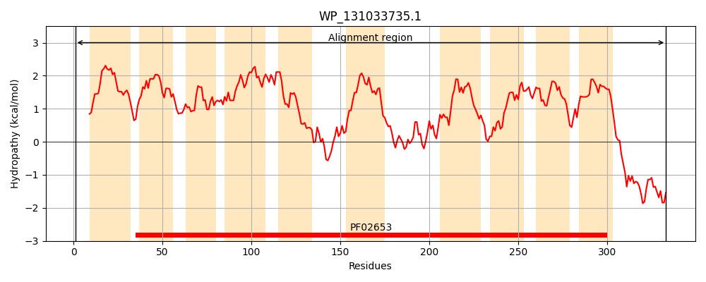
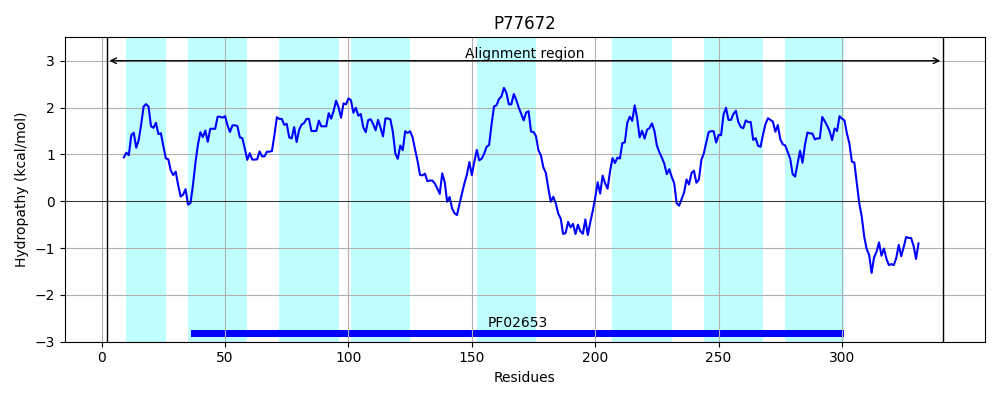
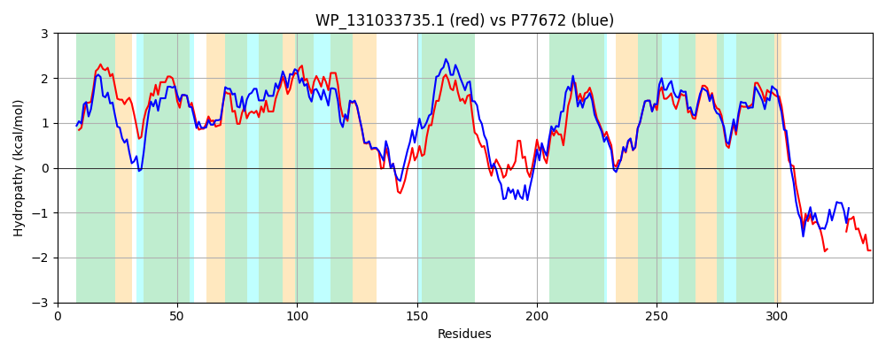

Hit Accession: P77672
Hit TCID: 3.A.1.2.8
Hit Description: gnl|BL_ORD_ID|11529 gnl|TC-DB|P77672|3.A.1.2.8 Hypothetical ABC transporter permease protein ydeY - Escherichia coli.
Mach Len: 340
e:0.000000
Query TMS Count : 10
Hit TMS Count: 8
TMS-Overlap Score: 8.200000
Predicted Substrates:CHEBI:40646;autoinducer-2
BLAST Alignment:
Score: 1099 , Bit scores: 427 bits, E-value: 5.9e-151, Alignment length: 340, Percentage identity: 64
Query: 1 MKTLLKNRELSAFFAIVALFAVLVALNPAYFSLQTLAMIFASSQILCLLALGATLVMLTRNIDVSVGSSVGLCAITVGVALNNGYGLATAIAFALAIGALAGAFNGLLVVVLRIPAIVATLGTLGLYRGVMLLWTGGKWIEGLPDSLKSLSEPAFIGVSPLGWLVLALLLAGGWLLSRTAFGRDFYAVGDNLAAARQLGVAVNRTRMLAFTLNGMLAACAGIVFAAQIGFVPNQTGSGLEMKAIAACVLGGISLLGGTGTLLGAFLGAFFLTQIDTVLVLFRLPAWWNDFIAGLVLLVVLVLDGRLRQALARHQRALKYSRF-------QPGNKGGKQVA 333
+K + NRE++A A+V LF + L+ Y S+QTL M+++S+QIL LLA+GATLVMLTRNIDVSVGS G+CA+ +G+ LN GY L A L +G LAG FNG+LV L+IPAIVATLGTLGLYRG+MLLWTGGKWIEGLP LK LS P +GVS +GWL + L+ WLL++TAFGR FYA GDNL ARQLGV R++AF+LNG +AA AGIVFA+QIGF+PNQTG+GLEMKAIAACVLGGISLLGG+G ++GA LGA+FLTQID+VLVL R+PAWWNDFIAGLVLL VLV DGRLR AL R+ R KY+RF +P + G K+ A
Sbjct: 2 LKFIQNNREITALLAVVLLFVLPGFLDRQYLSVQTLTMVYSSAQILILLAMGATLVMLTRNIDVSVGSITGMCAVLLGMLLNAGYSLPVACVATLLLGLLAGFFNGVLVAWLKIPAIVATLGTLGLYRGIMLLWTGGKWIEGLPAELKQLSAPLLLGVSAIGWLTIILVAFMAWLLAKTAFGRSFYATGDNLQGARQLGVRTEAIRIVAFSLNGCMAALAGIVFASQIGFIPNQTGTGLEMKAIAACVLGGISLLGGSGAIIGAVLGAWFLTQIDSVLVLLRIPAWWNDFIAGLVLLAVLVFDGRLRCALERNLRRQKYARFMTPPPSVKPASSGKKREA 341 | Protein Hydropathy Plots: |
|---|
|  |  |
Pairwise Alignment-Hydropathy Plot:
|
|---|
|  |